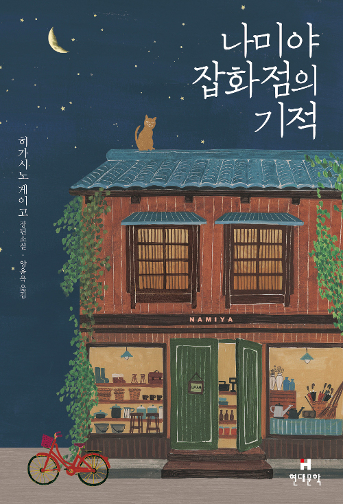

책소개
열여섯 살 소년 선윤재는 ‘감정 표현 불능증’을 앓고 있다.
‘아몬드’라 불리는 편도체가 작아 분노도 공포도 잘 느끼지 못한다.
타고난 침착성, 엄마와 할머니의 지극한 사랑 덕에 별 탈 없이 지냈지만,
크리스마스이브이던 열여섯 번째 생일날 비극적인 사고가 일어나 가족을 잃는다.
세상에 홀로 남겨진 윤재 앞에 ‘곤이’가 나타난다.
13년 만에 가족의 품으로 돌아오게 된 곤이는 분노로 가득 찬 아이다.
곤이는 윤재에게 화를 쏟아 내지만,
감정의 동요가 없는 윤재 앞에서 오히려 쩔쩔매고 만다.
윤재는 어쩐지 곤이가 밉지 않고, 오히려 궁금해진다.
두 소년은 남들이 이해할 수 없는 특별한 우정을 쌓아 간다.
윤재는 조금씩 내면의 변화를 겪는데…….
서로 다른 이유로 ‘괴물’이라 불리는 두 소년은 세상으로 한 발짝 나아갈 수 있을까?

나미야 잡화점의 기적
히가시노 게이고 저 | 현대문학 | 2012.12.19
감상평
실타래 처럼 얼키고 설킨 에피소드들에서 나오는 형언할 수 없는 여운
책소개
총 5장으로 이루어진 소설은 30여 년째 비어 있는 폐가,
‘나미야 잡화점’에 숨어든 삼인조 좀도둑이 뜻밖에도 과거로부터 도착한 고민 상담 편지에
답장을 하면서 겪게 되는 기묘한 하룻밤의 이야기를 그린다.
작가는 시공간을 넘나드는 편지라는 설정을 단순한 판타지가 아닌 추리적인 향기와
깊이가 담긴 소재로 승화시키는데, 마치 연작처럼 단편적으로 이어지던 에피소드들이
어느덧 하나로 연결되는 구성 곳곳에서는 최고의 추리소설가다운 절묘한 솜씨가 돋보인다.
이야기의 배경은 30여 년간 비어있던 교외의 한 잡화점.
강도짓을 하고 경찰의 눈을 피해 달아나던 삼인조 좀도둑이 '나미야 잡화점'으로 숨어든다.
그곳으로 난데없이 의문의 편지 한 통이 도착한다.
'나미야 잡화점 주인' 앞으로 온 편지는 고민 상담을 담고 있다.
삼인조는 누군가의 장난은 아닌지 의심하지만, 편지에 이끌려 답장을 해주기 시작한다.
이상한 편지는 한 통으로 그치지 않고, 답장도 이어지면서 여러 가지 고민과 인생 이야기가 등장한다.
그와 더불어 나미야 잡화점을 둘러싼 비밀도 하나 둘 베일을 벗는다.
너의 췌장을 먹고싶어
스미노 요루 저 | 소미미디어 | 2017.04.01
감상평
마음을 듬뿍 적시는 달콤하고 아련한 사랑 이야기
책소개
2016년 일본 서점 대상 2위에 오른 스미노 요루의 첫 소설이다.
시한부 선고를 받은 소녀와 함께한 어느 소년의 이야기를 그리고 있다.
‘요루노 야스미’라는 필명으로 소설 투고 웹사이트 <소설가가 되자>에
원고를 올리기 시작한 것이 이 작품의 시작이었다.
처음에는 파격적인 타이틀로 눈길을 끌었지만 결말이 정해진 이야기임에도 불구,
섬세한 문체와 이야기를 끌고 가는 작가의 필력이 대단하고 무엇보다 재미있다는 평가를 받으며
입소문을 타기 시작했다. 이후 출판사 편집자의 눈에 띄어 책으로 출간되었고,
작가는 어마어마한 주목을 받으며 일본 문단에 등장하게 되었다.
자의적인 은둔형 외톨이 남학생 ‘나’는 우연히 초긍정 인기 만점 동급생인 사쿠라의
<공병문고>를 발견하고 비밀을 공유하면서 그녀와 잠정적인 친구 계약을 맺는다.
‘네가 죽기 전까지’ 임시 친구 계약을 맺은 사이일 뿐이라고 생각했는데 왠지 점점
자신에게는 없는 그녀의 뭔가가 옮겨온다. 게다가 묘한 감정까지 쌓여가는 것 같다...
자기 계발
자존감 수업
윤홍균 저 | 심플라이프 | 2016.08.25
감상평
나의 내면으로 떠나는 여행의 동반자 같은 책
책소개
자존감 전문가이자 정신과 의사인 윤홍균 원장이 2년 넘게 심혈을 기울여 쓴 책으로,
자존감이 우리 삶에 미치는 영향을 친절하게 알려주고, 자존감을 끌어올리는 실질적인
방법을 알려주는 책. 높은 자존감을 갖고 싶지만 방법을 모르는 사람, 낮은 자존감
때문에 내면의 불화와 갈등을 겪고 있는 이들이 건강한 자존감을 회복하도록 돕는다.
틈만 나면 뭔가를 배우고 열심인데 늘 결핍감에 시달리는 사람, 겸손과 배려가 넘쳐
자존감까지 떨어진 사람, 작은 말에도 쉽게 상처받는 사람, 상대의 반응이 두려워
눈치보는 사람, 사랑과 이별의 과정이 유난히 힘든 사람, 진짜 원하는 것이 뭔지
헷갈려 엉뚱한 곳에 에너지를 쏟는 사람, 감정과 싸우느라 에너지가 쉽게 고갈되는 사람,
결국 이런 모습이 싫어 자신을 사랑하지 못한 채 살아가는 사람들이 보면 크게 도움을
받을 수 있는 책이다.
다양한 칼럼과 방송을 통해 ‘윤답장’ 선생으로 유명한 저자는 “나도 뒤처지는 기분,
포기하고 싶은 마음, 중독에 빠져 희망을 놓고 싶은 충동에 사로잡히곤 했다”고 고백하며,
자신이 그랬듯 더 많은 사람들이 자존감을 회복해 건강한 삶을 살길 바라는 마음을 담아
이 책을 펴냈다.
타이탄의 도구들
팀 페리스 저 | 토네이토 | 2018.01.29
감상평
나를 성찰하고 사소한 문제점도 교정하게
된다. 삶 전반에 걸친 조언을 얻고싶다면
꼭 읽어야 할 책.
책소개
이 책의 저자 팀 페리스는 지난 3년간 자신의 팟캐스트 방송의 수백만 청취자와 함께 뽑은
‘세상에서 가장 성공한 사람 200명’을 직접 만나, 그들의 삶을 집중 추적했다. 그들과
벌였던 심층 인터뷰와 열띤 토론, 그리고 그들이 직접 공개한 성공 비결들을 자신의 일상에
직접 적용해 탁월한 성과를 창출했던 경험을 망라해 이 한 권의 책에 담았다. 반응은
폭발적이었다. 그의 팟캐스트 방송은 아이튠스 비즈니스 분야 최초로 다운로드 수 1억 회를
돌파했고, 2016년 12월에 출간된 이 책은 3개월 만에 약 50만 부가 팔리는 대형 베스트셀러
반열에 올랐다.
‘폭발적인 아이디어, 창조적인 습관과 디테일한 전략, 강력한 실행력’을 갖춘 그들을 팀 페리스는
거인이라는 뜻의 ‘타이탄(titan)’이라 명명했고, 이 책에 담긴 그들의 압도적인 성공은 우리가
어떤 목표에 어떤 방법으로 접근해야 할지에 대한 가장 지혜로운 길라잡이가 되어준다. 따라서
이 책의 독자들은 자기 삶의 가장 큰 터닝포인트와 혁신을 만들어낼 수 있는 놀라운 계획들을
만나게 될 것이다. 자신의 가장 큰 가능성을 통해 또 한 명의 ‘타이탄’으로 성장할 수 있는
기회와 힘을 선물받게 될 것이다.
시민의 교양
채사장 저 | 웨일북 | 2015.12.31
감상평
지극히 기본적이지만, 그래서 더욱 중요하다.
이 시대를 살아가는 사람들이 올바른 이념을
갖기 위해 반드시 읽어야 할 책.
책소개
2015년 말 출간된 이 책의 첫 페이지에는 대통령이 등장한다. 당신은 한 국가의 대통령이다.
어느 날 당신에게 빨간 버튼이 하나 배달된다. 누르거나, 누르지 않거나, 결과는 달라진다.
당신의 선택에 따라 한 국가의 운명이, 한 개인의 삶이 결정된다. 무엇을 선택할 것인가?
『시민의 교양』은 ‘대통령의 선택’에서 시작된다. 지금의 한국사회에서 이 선택은 바로 우리의
삶과 직결된다. 저자 채사장은 독자에게 끊임없이 질문을 던지고 답을 고민하게 하면서, 시대적
지식을 습득해나갈 수 있게 돕는다.
이 책은 지금 이 시대에 자유란 무엇인지, 자본주의 시대에 직업이란 과연 무엇인지, 정말로
중요한 교육의 문제는 무엇인지, 다양하게 부딪히는 사회 문제들의 본질은 무엇인지 알아나가게 한다.
마지막으로 지금, 여기를 살고 있는 보통의 우리들이 맞이할 미래 모습을 그려본 후, 현재의 선택의
문제로 되돌아온다. 어느덧 독자는 다시 버튼 앞에 설 것이다. 그리고 책을 덮으며 삶의 방향을
생각하게 될 것이다.